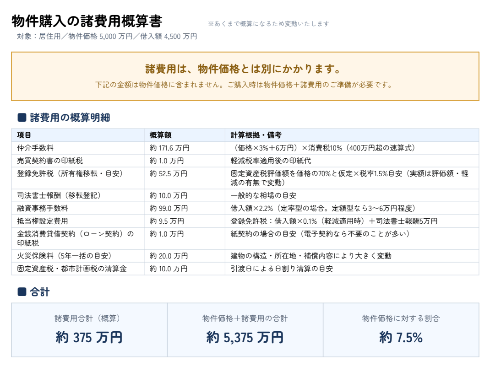

東京、大阪の割安中古マンション情報や
お得な不動産情報を知りたい方は
是非公式LINEの無料登録を！
住所や価格を入れるだけで、購入にかかる費用・売ったときの手取り・家賃と購入の比較を、登録なし・無料で計算できます。
無料ツールを使う※ 中古住宅を仲介で購入し、4,500万円を借り入れた場合の概算です。下の見本と同じ計算です。

こんな方に
初期費用の計算や家賃→購入シミュレーションで、賃貸と購入をかんたんに比べられます。住みたいエリアの周辺環境も、住所を入れるだけで調べられます。
家賃→購入シミュレーション／賃貸初期費用計算／売却収支計算| 機能 | できること |
|---|---|
| 家賃→購入シミュレーション | 今の家賃と同じ支払いで、いくらの物件が買えるかを逆算。賃貸と購入を同じ土俵で比べられます |
| 物件購入の諸費用概算書 | 物件価格のほかに、仲介手数料・登記・ローン費用・保険・清算金まで、現金がいくら要るかの概算書 |
| 売却収支計算 | 売却価格から、仲介手数料・抵当権抹消・譲渡所得税まで差し引いて、手元にいくら残るか |
| 賃貸初期費用計算 | 家賃から、敷金・礼金・保証料・日割り家賃まで、契約のときに払う初期費用の合計 |
| 機能 | できること |
|---|---|
| 周辺環境調査書 | 最寄り駅・学校・保育園・スーパー・病院・公園・商業施設などを徒歩分数つきで1枚に。住んでいる人・駅のにぎわい・学区・標高と坂・地盤・地価の動きなどの「エリアの特徴」も、出典つきの短い文で分かります |
| 物件買取査定 | 売れる価格から「いくらまでなら買えるか」を目標利益率ごとに逆算 |
| 重説調査項目 | 区域区分・用途地域・建ぺい率／容積率・防火指定・災害リスク4種を住所から。境界またがりは「要確認」を自動検出 |
| 機能 | できること |
|---|---|
| マイソク作成 | 他社図面の帯替え・読み取り・新規作成で、レインズ様式の図面を PDF / Excel に |
※ 計算する4つと物件買取査定は登録なしで、その場で使えます。重説調査項目はメールアドレスとパスワードだけの無料の会員登録で使えます。周辺環境調査書とマイソク作成は不動産会社さま向けの有料プランの機能で、無料の会員登録で月1回お試しいただけます。書類（PDF / Excel）の発行も有料プランの機能です。
※ レポートは宅地建物取引業法に基づく重要事項説明書ではありません。金額は一般的な前提にもとづく概算です。
機能ごとの詳しい説明は サービスメニュー へ。
東京、大阪の割安中古マンション情報や
お得な不動産情報を知りたい方は
是非公式LINEの無料登録を！